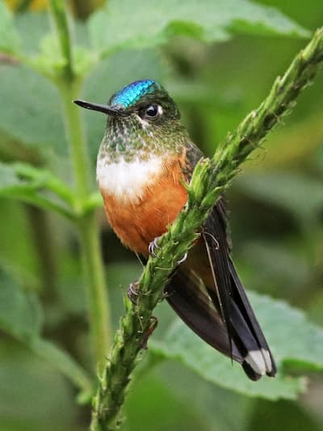

Using the picture element to vary images for different viewport conditions (art direction)
Using the srcset attribute to vary image resolutions for different viewport conditions

Using the picture element to conditionally load .webp files